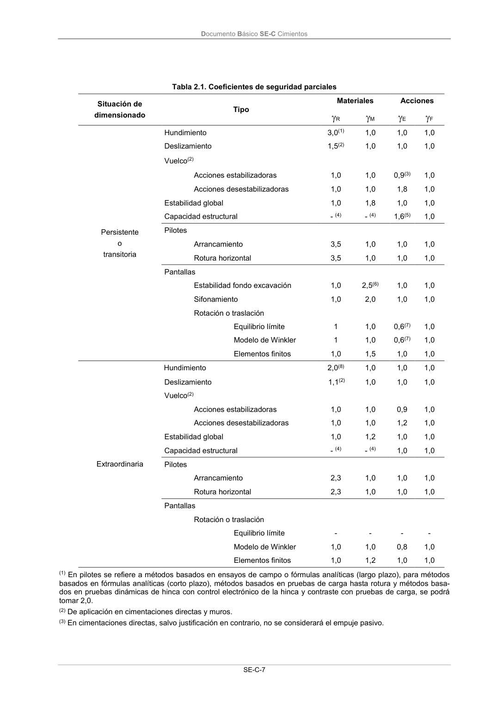
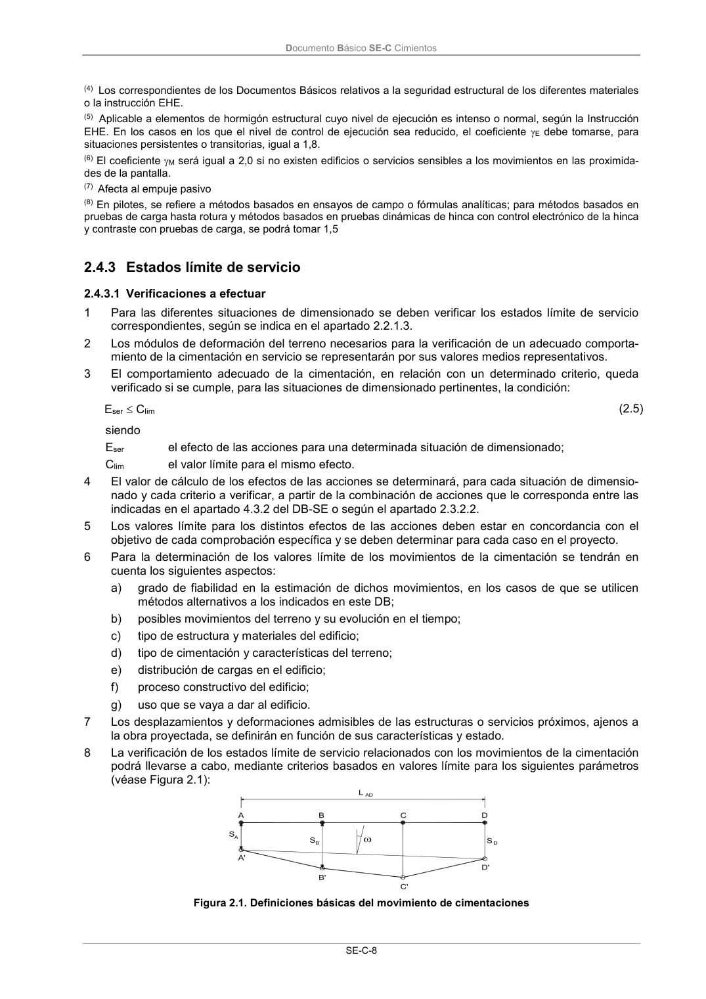

DB-SE-C · Fragmento de PDF p12 · versión 2019-12-20 · capa oficial
Formatos: JSON compacto · Markdown · PDF fuente
Ámbito del documento · texto del ámbito · documento y tablas
ID técnico a0036 · PDF pág. 12-13 · jerarquía no validada por persona · no es capítulo: sin_linea_de_encabezado · padre: raíz · literal original en el contenido: «E F»
E F F Persistente o transitoria Hundimiento 3,0(1) 1,0 1,0 1,0 Deslizamiento 1,5(2) 1,0 1,0 1,0 Vuelco(2) Acciones estabilizadoras 1,0 1,0 0,9(3) 1,0 Acciones desestabilizadoras 1,0 1,0 1,8 1,0 Estabilidad global 1,0 1,8 1,0 1,0 Capacidad estructural - (4) - (4) 1,6(5) 1,0 Pilotes Arrancamiento 3,5 1,0 1,0 1,0 Rotura horizontal 3,5 1,0 1,0 1,0 Pantallas Estabilidad fondo excavación 1,0 2,5(6) 1,0 1,0 Sifonamiento 1,0 2,0 1,0 1,0 Rotación o traslación Equilibrio límite 1 1,0 0,6(7) 1,0 Modelo de Winkler 1 1,0 0,6(7) 1,0 Elementos finitos 1,0 1,5 1,0 1,0 Extraordinaria Hundimiento 2,0(8) 1,0 1,0 1,0 Deslizamiento 1,1(2) 1,0 1,0 1,0 Vuelco(2) Acciones estabilizadoras 1,0 1,0 0,9 1,0 Acciones desestabilizadoras 1,0 1,0 1,2 1,0 Estabilidad global 1,0 1,2 1,0 1,0 Capacidad estructural - (4) - (4) 1,0 1,0 Pilotes Arrancamiento 2,3 1,0 1,0 1,0 Rotura horizontal 2,3 1,0 1,0 1,0 Pantallas Rotación o traslación Equilibrio límite - - - - Modelo de Winkler 1,0 1,0 0,8 1,0 Elementos finitos 1,0 1,2 1,0 1,0 (1) En pilotes se refiere a métodos basados en ensayos de campo o fórmulas analíticas (largo plazo), para métodos basados en fórmulas analíticas (corto plazo), métodos basados en pruebas de carga hasta rotura y métodos basa- dos en pruebas dinámicas de hinca con control electrónico de la hinca y contraste con pruebas de carga, se podrá tomar 2,0. (2) De aplicación en cimentaciones directas y muros. (3) En cimentaciones directas, salvo justificación en contrario, no se considerará el empuje pasivo. Documento Básico SE-C Cimientos SE-C-8 (4) Los correspondientes de los Documentos Básicos relativos a la seguridad estructural de los diferentes materiales o la instrucción EHE. (5) Aplicable a elementos de hormigón estructural cuyo nivel de ejecución es intenso o normal, según la Instrucción EHE. En los casos en los que el nivel de control de ejecución sea reducido, el coeficiente E debe tomarse, para situaciones persistentes o transitorias, igual a 1,8. (6) El coeficiente M será igual a 2,0 si no existen edificios o servicios sensibles a los movimientos en las proximida- des de la pantalla. (7) Afecta al empuje pasivo (8) En pilotes, se refiere a métodos basados en ensayos de campo o fórmulas analíticas; para métodos basados en pruebas de carga hasta rotura y métodos basados en pruebas dinámicas de hinca con control electrónico de la hinca y contraste con pruebas de carga, se podrá tomar 1,5


PDF fuente redistribuible: copia fiel enlazada en esta página (SHA256 verificado).